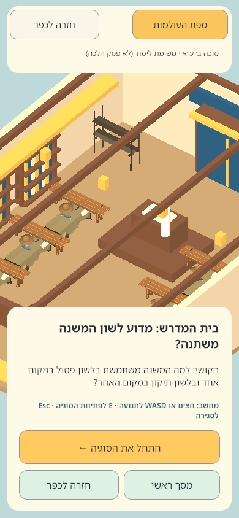
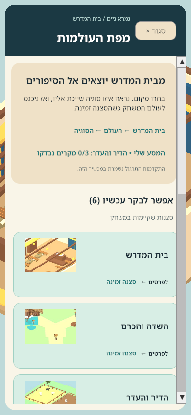
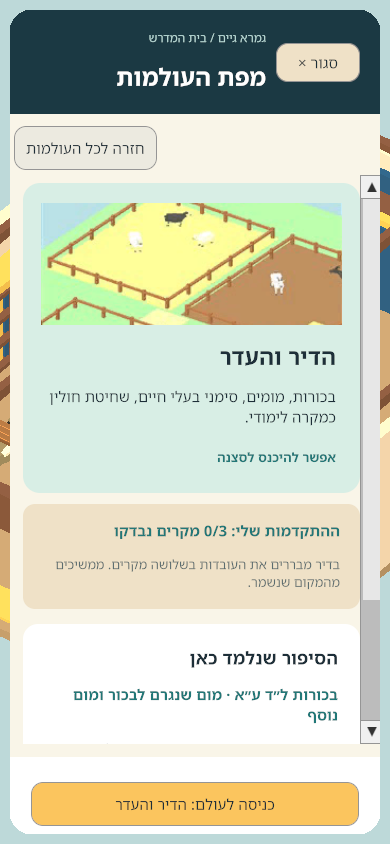
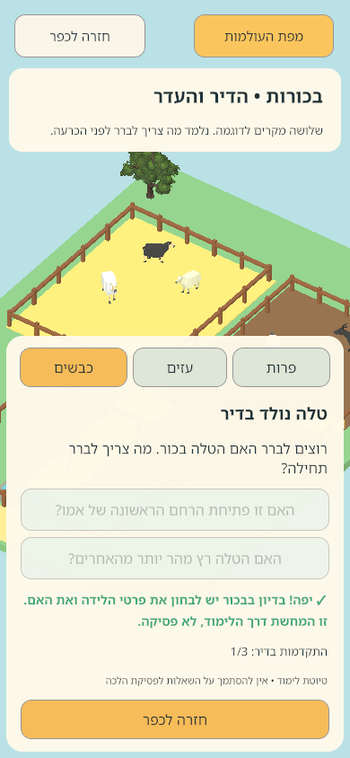
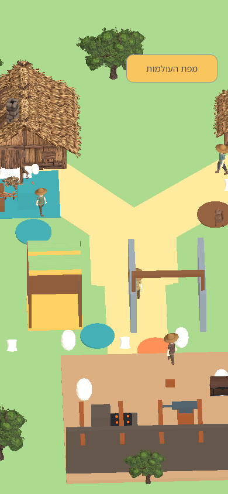
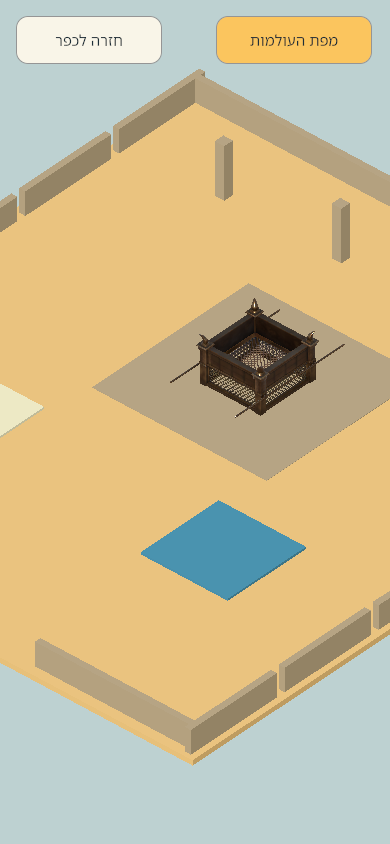

נבדקו פתיחת מפת העולמות, כניסה לדיר הבכורות, פתרון שלושה מקרים, מניעת ניקוד על תשובה שגויה, שמירת התקדמות 3/3, מעבר לכפר ולמשכן וחזרה לבית המדרש.
בית המדרשדיר הבכורותהכפרהמשכןחזרה לבית המדרש
מקור: Unity 6000.7.0b6, תוצאת GemaraAtlasJourney.qa-result.txt בשעה 07:11 (שעון ישראל). שבעת הקבצים צולמו ב־390×844 בערך המקורי של תצוגת הטלפון.
כך זה נראה במשחק עצמו













מה הבדיקה אינה מוכיחה? עדיין חסרים אימות Android במכשיר אמיתי, בדיקת כל המשחקונים, ביקורת פדגוגית־הלכתית מלאה וליטוש חזותי נוסף. תמונות אלו הן תיעוד של דמו Unity, ולא ייצוג של משחק גמור.